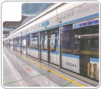
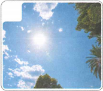
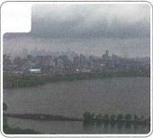
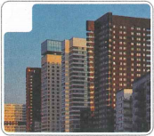
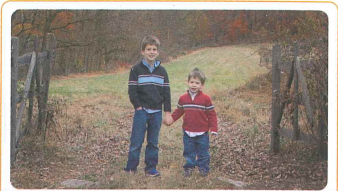
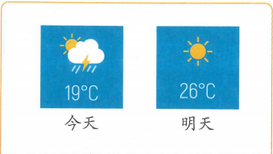
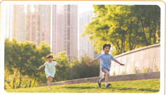
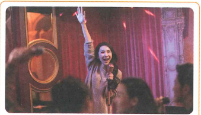

这里比北京冷多了
Ở đây lạnh hơn Bắc Kinh nhiều
Mục tiêu: thảo luận thời tiết; miêu tả sự khác biệt trạng thái; dùng câu so sánh với 比.
🔥 Khởi động
1. Lựa chọn hình ảnh tương ứng với các từ ngữ: A 晴 B 楼 C 地铁 D 阴




2. Khảo sát nhóm: 几点起床？几点睡觉？跑步快不快？
📚 Từ vựng 1
🎧 Nghe Bài khóa 1
（1）白家月今天什么时候有课？ A 上午 B 下午 C 晚上
（2）北京天气怎么样？ A 不是晴天 B 正下着雪 C 有点儿冷
💬 Bài khóa 1
🧠 Câu so sánh (4)
“多了 / 得多” đặt sau tính từ để biểu thị mức chênh lệch lớn.
我这里比北京冷多了。
坐飞机比坐火车快得多。
他觉得红茶比绿茶好喝得多。
📚 Từ vựng 2
🎧 Nghe Bài khóa 2
（1）王一飞那里的天气怎么样？ A 晴 B 阴 C 下雪
（2）王一飞现在要去做什么？ A 上课 B 穿衣服 C 买吃的
💬 Bài khóa 2
🧠 Câu so sánh (5)
Nếu động từ có bổ ngữ trạng thái, “比” có thể đặt trước hoặc sau động từ.
妈妈比我睡得晚。
李文跑得比白家月快。
📚 Từ vựng 3
🎧 Nghe Bài khóa 3
（1）李文找白家月做什么？ A 一起去跑步 B 一起坐地铁 C 一起见朋友
（2）李文怎么去找白家月？ A 跑步 B 打车 C 坐地铁
💬 Bài khóa 3
🧠 Câu so sánh (6)
Nếu động từ vừa mang tân ngữ vừa có bổ ngữ trạng thái, có thể đưa tân ngữ lên trước hoặc lặp lại động từ.
白家月汉字写得比陈天中好。
他踢足球比我踢得好。
📚 Từ vựng 4
🎧 Bài khóa 4
（1）今天是个晴天，白家月去外面跑步了。（ ）
（2）白家月很喜欢跟李文一起跑步。（ ）
✏️ Bài tập tổng hợp
Chọn: A 事情 B 正 C 从小 D 外面 E 好
（1）你看，前边的那个人 ______ 高啊！
（2）今天的天气没有昨天好，______ 正下着雨呢。
（3）对不起，公司这几天 ______ 很多，太忙了，所以忘了你的生日。
（4）A：我 ______ 就爱动，经常跟朋友一起踢球、跑步。 B：所以你身体这么好！
（5）A：小雪在做什么呢？ B：快要考试了，她 ______ 看书呢。
🖼️ Miêu tả tranh
Sử dụng từ ngữ và điểm ngôn ngữ đã học trong bài để miêu tả các hình ảnh sau.




🎭 Hoạt động trên lớp
Hai người một nhóm, gọi điện thoại thảo luận về tình hình thời tiết, đồng thời so sánh sự khác biệt thời tiết giữa các vùng khác nhau. Cố gắng sử dụng từ vựng và điểm ngôn ngữ của bài.
B：我在家休息呢。……
🎯 Tổng kết Bài 12
✓ Thời tiết: 晴、阴、下雪.
✓ So sánh chênh lệch lớn: 比 + tính từ + 多了 / 得多.
✓ So sánh với động từ và bổ ngữ trạng thái.
✓ Từ trọng tâm: 事情、晴、正、外面、阴、从小、地铁、楼、站、小时候、好.